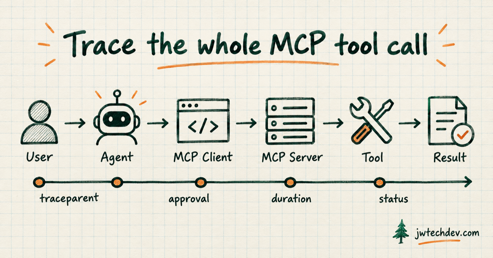

How to trace an MCP tool call with OpenTelemetry
A useful trace connects user intent, agent reasoning, MCP transport, tool execution, approval, result, duration, and error state without dumping sensitive content into telemetry.

Quick answer
Give every agent task one trace identity and carry it across the model call, MCP client, MCP server, tool execution, approval decision, and final result. Record enough metadata to explain what happened, but treat tool arguments and outputs as sensitive by default.
The end-to-end trace
A user requests an outcome. The agent selects a tool. The MCP client sends the request. The MCP server validates it and calls the underlying system. The result returns to the agent. A complete trace links those stages so an operator can answer: who asked, what acted, which tool ran, what target changed, who approved it, how long it took, and whether it succeeded.
Minimum useful fields
Start with workflow ID, task ID, user or service identity, agent name and version, model, MCP protocol version, MCP method, tool name, target system, operation class, approval state, start time, duration, status, error type, cost, and artifact reference.
Add deployment and tenant context so the same tool call can be separated across development, sandbox, and production.
Context propagation
OpenTelemetry's developing MCP conventions describe propagating W3C trace context through params._meta, including traceparent, tracestate, and baggage. That allows the MCP hop to remain part of the wider distributed trace.
The AWS stateless MCP guidance reinforces the same idea: every request should carry the protocol and client context needed to handle it. Stateless transport does not mean invisible work.
What not to record by default
Tool arguments and results can contain credentials, customer data, prompts, campaign content, personal information, or regulated records. OpenTelemetry marks argument and result capture as opt-in for a reason.
Prefer structured metadata and artifact references. Apply redaction, field allowlists, retention limits, access controls, and environment-specific sampling before collecting payloads.
Sources checked
Want the starter kit?
Build the cloud and AI vocabulary behind traces, tools, and approval gates.
Get resources